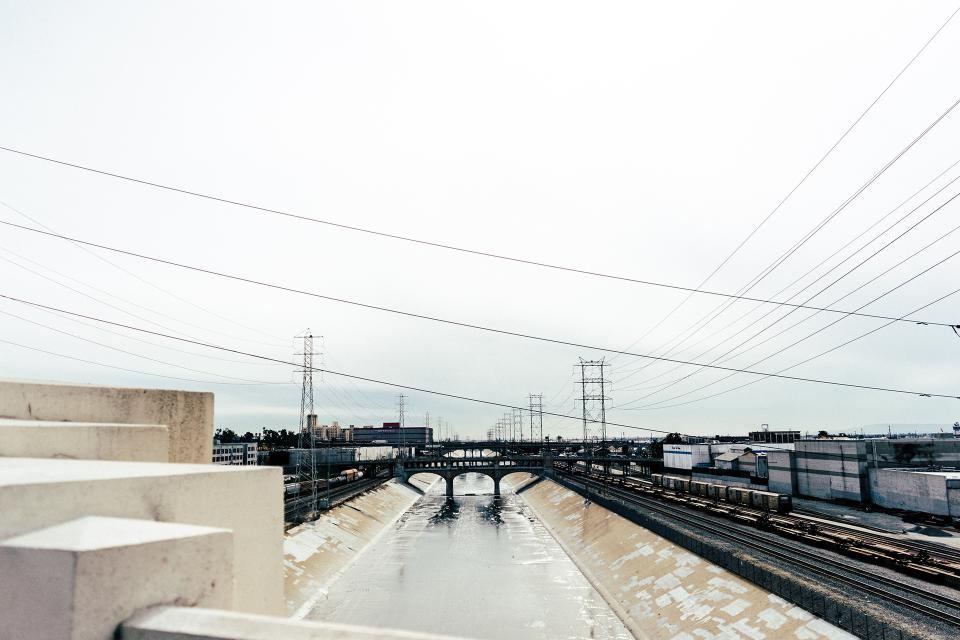
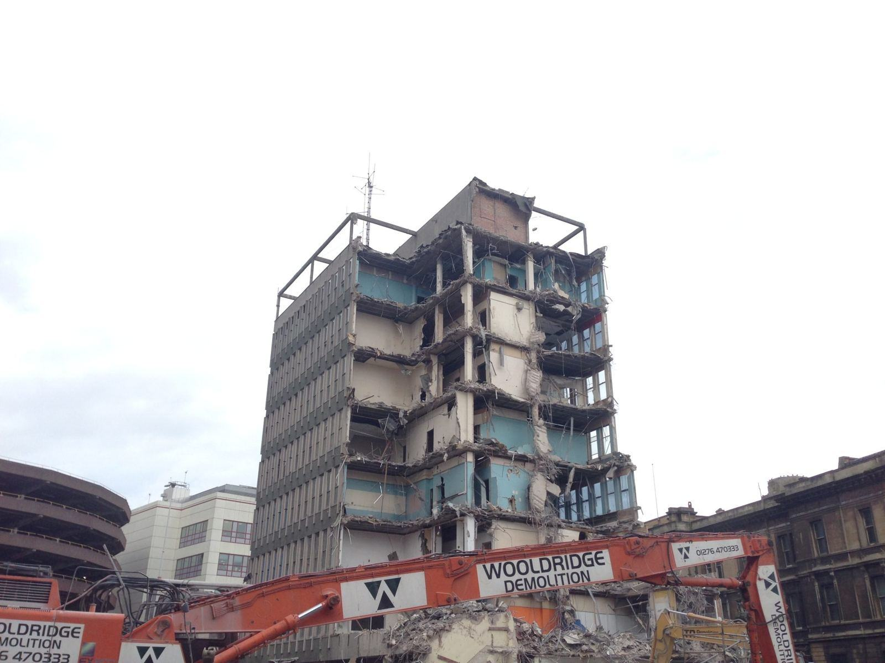
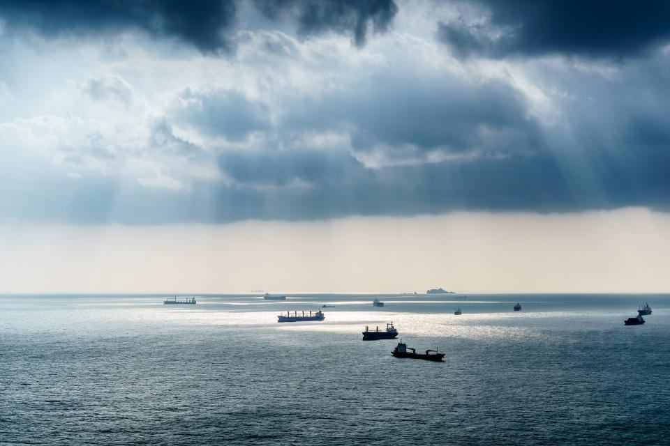
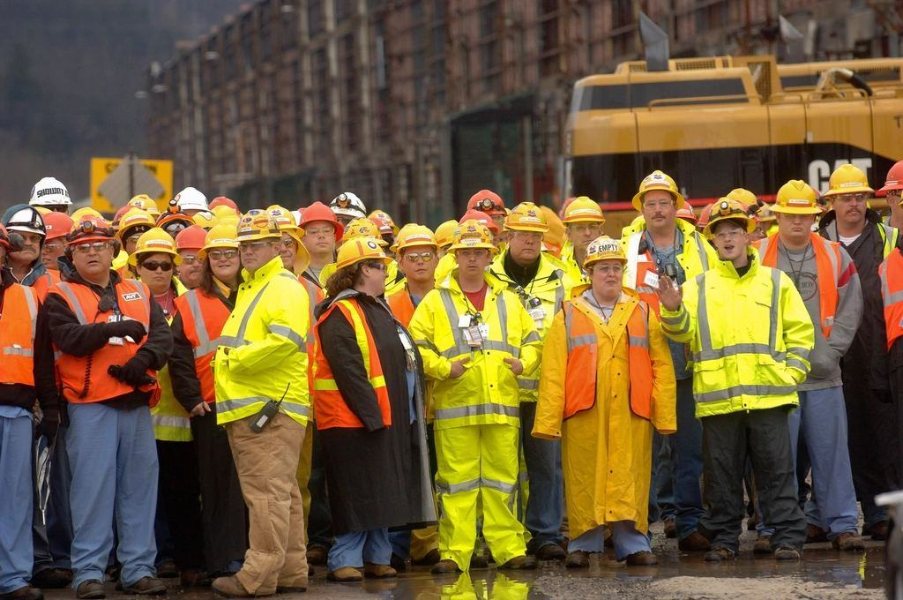

Tjänster
Det mesta vi river står delvis under vatten: stålspont, betongpålar, kreosotimpregnerade stolpar och stenkistor från förra sekelskiftet. Vi sågar under ytan, lyfter upp delarna på pråmen och sorterar ombord så att ingenting hamnar på botten.
Vad står i vattnet hos er?

Kajer och hamnkonstruktioner
Gamla betongkajer med frostsprängningar och rostig armering rivs från pråmen med hydraulhammare och sax. Stenkistor plockas isär och stenen läggs upp för återbruk i nya erosionsskydd.
Grumling begränsas med siltgardin runt arbetsområdet, och vattnet provtas varje dag i känsliga vikar.

Bryggor och båthus
Småbåtshamnar byter ut sina träbryggor mot flytbryggor, och båthus från 1940-talet står ofta på ruttna pålar. Vi river från vattensidan så att stranden och vassen lämnas orörda.
Privata tomter i skärgården når vi utan att köra en enda maskin över gräsmattan.

Arbete under ytan
Våra dykare sågar av pålar och spont vid botten, kapar gamla kablar och fäster lyftstroppar. Allt arbete planeras enligt Arbetsmiljöverkets regler för dykeriarbete, med dykledare och reservdykare på pråmen.
Vi dokumenterar botten med undervattensfilm före och efter arbetet.

Farligt avfall från sjön
Kreosot, tjärade stockar och blymantlade kablar är farligt avfall även när de legat i vattnet i sextio år. Allt lyfts upp hela, plastas in på pråmen och körs till godkänd mottagare i Karlskrona.
Kreosotstolpar sågas aldrig i vattnet – de dras upp med vibrator eller grävmaskin.
Fyra moment, alla från vattensidan
- 1

Plats och djup
Vi åker ut med arbetsbåt, lodar djupet och filmar konstruktionen under ytan.
- 2

Anmälan och väderfönster
Vi gör anmälan om vattenverksamhet till länsstyrelsen och planerar arbetet efter vind och fiskelek.
- 3

Rivning från pråm
Pråmen förankras med spudpålar, dykarna sågar och grävaren lyfter upp delarna på däck.
- 4

Bottenfilm och kvitton
Ny film visar att botten är fri. Du får vägningskvitton och mottagningsbevis för kreosoten.
Behörigheter till sjöss och under ytan
- YrkesdykarcertifikatFyra dykare med certifikat för dykeriarbete enligt Arbetsmiljöverkets föreskrifter, och egen dykledare.
- FartygsbefälSkepparna har behörighet från Transportstyrelsen för att föra arbetsfartyg i skärgården.
- Kreosot som farligt avfallLänsstyrelsen i Blekinge läns tillstånd att transportera kreosot och blyhaltigt kabelavfall.
- ISO 14001 till sjössMiljöledningssystem med rutiner för grumling, oljespill och arbete i skyddade vattenområden.